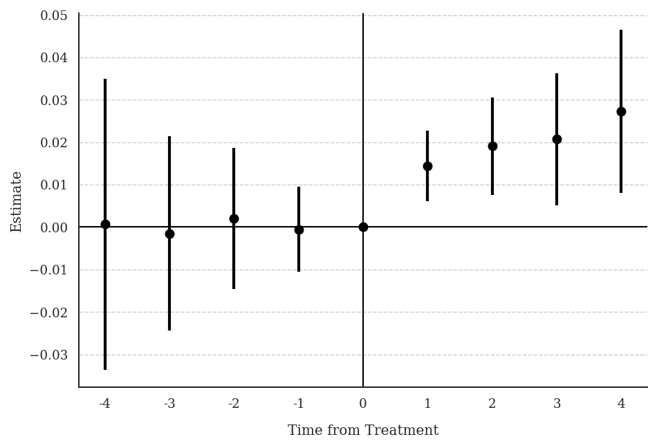
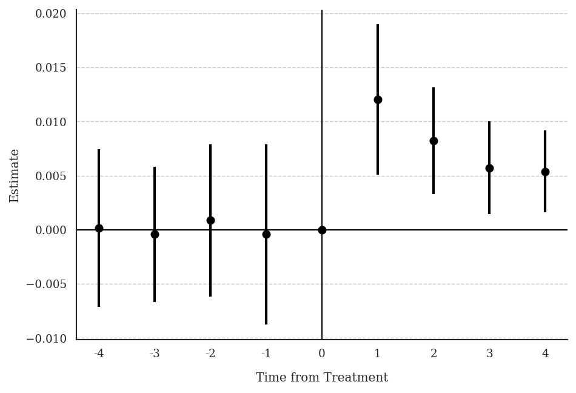

3 Chapter 11: Gentzkow et al. (2011) — Newspapers and Voter Turnout
Research Question: What is the effect of daily newspapers on presidential voter turnout?
Data: Imbalanced panel of 1,195 US counties, presidential election years 1868–1928. Treatment numdailies (number of daily newspapers) is discrete multivalued and on-and-off. Outcome: prestout (voter turnout rate).
3.1 T7: Verify Treatment Design
use "gentzkowetal_didtextbook.dta", clear
xtset cnty90 year
bysort cnty90 (year): gen first_numdailies = numdailies[1]
tab first_numdailiesfirst_numdailies | Freq. Percent
-----------------+-----------------
0 | 13,264 78.62
1 | 1,113 6.60
2 | 1,332 7.89
3 | 688 4.08
4 | 288 1.71
5 | 128 0.76
6 | 48 0.28
7 | 16 0.09
...
33 | 16 0.09
-----------------+-----------------
Total | 16,872 100.00gen d_numdailies = .
bysort cnty90 (year): replace d_numdailies = numdailies - numdailies[_n-1]
tab d_numdailiesd_numdailies takes both positive and negative values — counties experience both increases and decreases. 19% of counties experience 7 or more changes over the panel.
library(haven)
library(dplyr)
df <- read_dta("C:/data/gentzkowetal_didtextbook.dta")
# First-period treatment distribution
df %>%
group_by(cnty90) %>%
arrange(year) %>%
summarise(first_numdailies = first(numdailies)) %>%
count(first_numdailies) %>%
mutate(pct = 100 * n / sum(n)) %>%
print(n = 10)# A tibble: 12 × 3
first_numdailies n pct
<dbl> <int> <dbl>
1 0 1078 78.6
2 1 90 6.6
3 2 108 7.9
4 3 56 4.1
5 4 23 1.7import pandas as pd
df = pd.read_stata("C:/data/gentzkowetal_didtextbook.dta")
first = (
df.sort_values("year")
.groupby("cnty90")["numdailies"]
.first()
.reset_index(name="first_numdailies")
)
print(first["first_numdailies"].describe())count 1372.000000
mean 0.540000
std 1.450000
min 0.000000
max 33.0000003.2 T8: Non-Normalized Event-Study Effects
did_multiplegt_dyn prestout cnty90 year numdailies, ///
effects(4) placebo(4) effects_equal("all")
graph export "ch11_fig5_newspapers_nonnorm.png", replace width(1200)--------------------------------------------------------------------------------
Estimation of treatment effects: Event-study effects
--------------------------------------------------------------------------------
| Estimate SE LB CI UB CI N Switchers
-------------+------------------------------------------------------------------
Effect_1 | .0144244 .0042477 .0060992 .0227497 5674 1119
Effect_2 | .0190899 .0058429 .0076381 .0305418 4648 1054
Effect_3 | .0207147 .0079164 .0051989 .0362305 3750 984
Effect_4 | .0272653 .0097924 .0080727 .046458 2980 917
--------------------------------------------------------------------------------
Test of joint nullity of the effects : p-value = .00681389
Test of equality of the effects : p-value = .41515197
Av_tot_eff | .0160565 .0047761 .0066956 .0254174 8659 4074
Average number of time periods over which a treatment's effect is accumulated = 2.4376
--------------------------------------------------------------------------------
Testing the parallel trends and no anticipation assumptions
--------------------------------------------------------------------------------
| Estimate SE LB CI UB CI N Switchers
-------------+------------------------------------------------------------------
Placebo_1 | -.0005025 .0051322 -.0105615 .0095565 4471 902
Placebo_2 | .0020594 .0085031 -.0146063 .0187251 2778 746
Placebo_3 | -.0015365 .0116825 -.0244337 .0213607 1644 604
Placebo_4 | .0006573 .0175032 -.0336483 .0349628 910 441
--------------------------------------------------------------------------------
Test of joint nullity of the placebos : p-value = .99219793
library(DIDmultiplegtDYN)
library(polars)
res_t8 <- did_multiplegt_dyn(
df = df,
outcome = "prestout",
group = "cnty90",
time = "year",
treatment = "numdailies",
effects = 4,
placebo = 4,
effects_equal = "all"
)
print(res_t8) Av_tot_eff | 0.0160565 0.0047761 0.0066956 0.0254174 8659 4074
Test of joint nullity of the effects : p-value = 0.0068139
Test of equality of the effects : p-value = 0.4151520
Test of joint nullity of the placebos : p-value = 0.9921979
from did_multiplegt_dyn import did_multiplegt_dyn
res_t8 = did_multiplegt_dyn(
df = df,
outcome = "prestout",
group = "cnty90",
time = "year",
treatment = "numdailies",
effects = 4,
placebo = 4,
effects_equal = "all"
)
print(res_t8) Av_tot_eff | 0.016056 0.004776 0.006696 0.025417 8659 4074
Average number of time periods over which a treatment's effect is accumulated = 2.4376
Test of joint nullity of the effects : p-value = 0.006814
Test of equality of the effects : p-value = 0.415152
Test of joint nullity of the placebos : p-value = 0.992198
Interpretation: Being exposed to a weakly larger number of newspapers for one electoral cycle increases turnout by 1.4pp (significant). Effects grow with exposure length, up to 2.7pp after four cycles. One cannot reject equality of effects (p = 0.42). Pre-trends are small and jointly insignificant (p = 0.99).
3.3 T9: Treatment Path Descriptions
did_multiplegt_dyn prestout cnty90 year numdailies, ///
effects(2) design(0.8, console)--------------------------------------------------------------------------------
Detection of treatment paths - 2 periods after first switch
--------------------------------------------------------------------------------
| #Groups %Groups ℓ=0 ℓ=1 ℓ=2
-------------+-------------------------------------------------------
TreatPath1 | 343 32.15 0 1 1
TreatPath2 | 187 17.53 0 1 0
TreatPath3 | 131 12.28 0 1 2
TreatPath4 | 57 5.342 0 2 2
TreatPath5 | 47 4.405 0 2 1
TreatPath6 | 33 3.093 1 2 2
TreatPath7 | 30 2.812 0 1 3
TreatPath8 | 22 2.062 2 3 2
TreatPath9 | 20 1.874 2 1 1
--------------------------------------------------------------------------------
Treatment paths detected in at least 80.00% of the switching groups: Total % = 81.54%res_t9 <- did_multiplegt_dyn(
df = df,
outcome = "prestout",
group = "cnty90",
time = "year",
treatment = "numdailies",
effects = 2,
design = list(0.8)
)
print(res_t9)Treatment paths detected in at least 80.00% of the switching groups:
TreatPath1: 0 → 1 → 1 (32.15%)
TreatPath2: 0 → 1 → 0 (17.53%)
TreatPath3: 0 → 1 → 2 (12.28%)
...
Total % = 81.54%res_t9 = did_multiplegt_dyn(
df = df,
outcome = "prestout",
group = "cnty90",
time = "year",
treatment = "numdailies",
effects = 2,
design = [0.8]
)
print(res_t9)Treatment paths detected in at least 80.00% of the switching groups:
TreatPath1: 0 → 1 → 1 (32.15%)
TreatPath2: 0 → 1 → 0 (17.53%)
...
Total % = 81.54%Interpretation: 32% of effects in Effect_2 come from counties that went from 0 to 1 newspaper and stayed at 1. 17.5% come from counties that gained 1 newspaper but then returned to 0 (on-and-off). This confirms the complex, non-staggered nature of the treatment.
3.4 T10: Normalized Event-Study Effects
did_multiplegt_dyn prestout cnty90 year numdailies, ///
effects(4) placebo(4) normalized normalized_weights effects_equal("all")
graph export "ch11_fig6_newspapers_norm.png", replace width(1200)--------------------------------------------------------------------------------
Estimation of treatment effects: Event-study effects
--------------------------------------------------------------------------------
| Estimate SE LB CI UB CI N Switchers
-------------+------------------------------------------------------------------
Effect_1 | .0120186 .0035392 .0050819 .0189552 5674 1119
Effect_2 | .0082126 .0025136 .0032859 .0131392 4648 1054
Effect_3 | .0057192 .0021857 .0014354 .010003 3750 984
Effect_4 | .0053873 .0019348 .0015951 .0091795 2980 917
--------------------------------------------------------------------------------
Test of joint nullity of the effects : p-value = .00681389
Test of equality of the effects : p-value = .16525779
----------------------------------------------------------------------
Weights on treatment lags
----------------------------------------------------------------------
| ℓ=1 ℓ=2 ℓ=3 ℓ=4
-------------+--------------------------------------------
k=0 | 1.0000 0.4849 0.3549 0.2777
k=1 | . 0.5151 0.3131 0.2568
k=2 | . . 0.3319 0.2271
k=3 | . . . 0.2383
-------------+--------------------------------------------
Total | 1.0000 1.0000 1.0000 1.0000
res_t10 <- did_multiplegt_dyn(
df = df,
outcome = "prestout",
group = "cnty90",
time = "year",
treatment = "numdailies",
effects = 4,
placebo = 4,
normalized = TRUE,
normalized_weights = TRUE,
effects_equal = "all"
)
print(res_t10)Test of joint nullity of the effects : p-value = 0.0068139
Test of equality of the effects : p-value = 0.1652578
res_t10 = did_multiplegt_dyn(
df = df,
outcome = "prestout",
group = "cnty90",
time = "year",
treatment = "numdailies",
effects = 4,
placebo = 4,
normalized = True,
normalized_weights = True,
effects_equal = "all"
)
print(res_t10) Av_tot_eff | 0.016056 0.004776 0.006696 0.025417
Test of joint nullity of the effects : p-value = 0.006814
Test of equality of the effects : p-value = 0.165258
Interpretation: Normalized effects decrease with ℓ (from 0.012 to 0.005), though one cannot reject equality (p = 0.17). This suggests lagged newspapers may have smaller effects on turnout than contemporaneous newspapers.
3.5 T11: Joint Test — No Lagged Treatment Effect + Constant Effects
* first_change and same_treat_after_first_change are included in the dataset
did_multiplegt_dyn prestout cnty90 year numdailies ///
if year <= first_change | same_treat_after_first_change == 1, ///
effects(2) effects_equal("all") same_switchers graph_off--------------------------------------------------------------------------------
Estimation of treatment effects: Event-study effects
--------------------------------------------------------------------------------
| Estimate SE LB CI UB CI N Switchers
-------------+------------------------------------------------------------------
Effect_1 | .01525 .0058956 .0036949 .0268052 5019 512
Effect_2 | .0164091 .0073633 .0019773 .0308409 4101 512
--------------------------------------------------------------------------------
Test of joint nullity of the effects : p-value = .02913029
Test of equality of the effects : p-value = .83016668df_sub <- df[df$year <= df$first_change | df$same_treat_after_first_change == 1, ]
res_t11 <- did_multiplegt_dyn(
df = df_sub,
outcome = "prestout",
group = "cnty90",
time = "year",
treatment = "numdailies",
effects = 2,
effects_equal = "all",
same_switchers = TRUE
)
print(res_t11)Test of joint nullity of the effects : p-value = 0.0291303
Test of equality of the effects : p-value = 0.8301667df_sub = df[(df["year"] <= df["first_change"]) |
(df["same_treat_after_first_change"] == 1)].copy()
res_t11 = did_multiplegt_dyn(
df = df_sub,
outcome = "prestout",
group = "cnty90",
time = "year",
treatment = "numdailies",
effects = 2,
effects_equal = "all",
same_switchers = True
)
print(res_t11)Test of joint nullity of the effects : p-value = 0.029130
Test of equality of the effects : p-value = 0.830167Interpretation: With p = 0.83, we cannot reject that the two effects are equal, suggesting the first lag of newspapers does not affect current turnout. This supports the “no dynamic effects” hypothesis for this subsample.